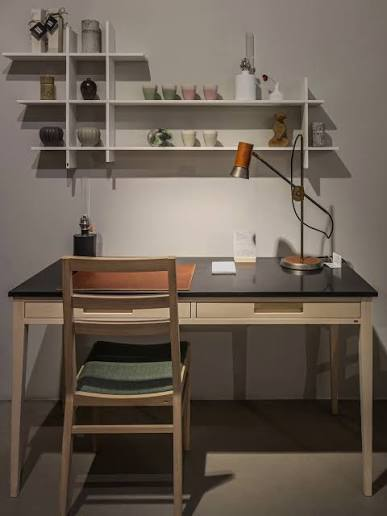

75M NOK
Revenue FY25
17%
EBITDA margin
65–70%
Structural margins
The opportunity
A small reused segment is growing into a structural market.
A defining moment came when Movement acquired a large volume of office furniture from PwC during a relocation. With only a few weeks to clear the premises, founder Svein Moen quickly photographed and listed the furniture online, then invited customers to showroom sales.

NOK 12bn
Total Scandinavian office furniture market
~ NOK 0.7bn
Estimated current used office furniture market
NOK 2.7bn
Forecast used office furniture market by 2030
(15% Growth)
The circular model
Value is created at every step of the reuse loop.
Movement manages the full journey from sourcing to resale. Refurbishment keeps quality high and products in use, while a managed resale platform matches renewed furniture with new demand.
Bankability indicators
From Founder-Led Resale to a Scalable Circular Platform
Movement's model connects operational know-how with attractive unit economics. The next stage is to scale the platform while maintaining quality, access to supply and predictable margins.
Proven profitability
and demand
Scalable
economics
Integrated infrastructure
creates a competitive edge

“Movement combines a proven, profitable model with strong structural tailwinds. The team has built, and is a good example of circularity being a strong business case, not just an ambition.”
Managing Partner and CIO, Ignite Capita